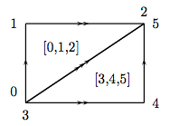
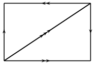
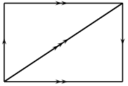
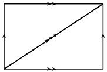

Finite Delta-complexes¶
AUTHORS:
John H. Palmieri (2009-08)
This module implements the basic structure of finite \(\Delta\)-complexes. For full mathematical details, see Hatcher [Hat2002], especially Section 2.1 and the Appendix on “Simplicial CW Structures”. As Hatcher points out, \(\Delta\)-complexes were first introduced by Eilenberg and Zilber [EZ1950], although they called them “semi-simplicial complexes”.
A \(\Delta\)-complex is a generalization of a simplicial complex; a \(\Delta\)-complex \(X\) consists
of sets \(X_n\) for each nonnegative integer \(n\), the elements of which
are called n-simplices, along with face maps between these sets of
simplices: for each \(n\) and for all \(0 \leq i \leq n\), there are
functions \(d_i\) from \(X_n\) to \(X_{n-1}\), with \(d_i(s)\) equal to the
\(i\)-th face of \(s\) for each simplex \(s \in X_n\). These maps must
satisfy the simplicial identity
\[d_i d_j = d_{j-1} d_i \text{ for all } i<j.\]
Given a \(\Delta\)-complex, it has a geometric realization: a topological space built by taking one topological \(n\)-simplex for each element of \(X_n\), and gluing them together as determined by the face maps.
\(\Delta\)-complexes are an alternative to simplicial complexes. Every simplicial complex is automatically a \(\Delta\)-complex; in the other direction, though, it seems in practice that one can often construct \(\Delta\)-complex representations for spaces with many fewer simplices than in a simplicial complex representation. For example, the minimal triangulation of a torus as a simplicial complex contains 14 triangles, 21 edges, and 7 vertices, while there is a \(\Delta\)-complex representation of a torus using only 2 triangles, 3 edges, and 1 vertex.
Note
This class derives from
GenericCellComplex, and so
inherits its methods. Some of those methods are not listed here;
see the Generic Cell Complex
page instead.
- class sage.topology.delta_complex.DeltaComplex(data=None, check_validity=True)[source]¶
Bases:
GenericCellComplexDefine a \(\Delta\)-complex.
INPUT:
data– see below for a description of the optionscheck_validity– boolean (default:True); ifTrue, check that the simplicial identities hold
OUTPUT: a \(\Delta\)-complex
Use
datato define a \(\Delta\)-complex. It may be in any of three forms:datamay be a dictionary indexed by simplices. The value associated to a d-simplex \(S\) can be any of:a list or tuple of (d-1)-simplices, where the i-th entry is the i-th face of S, given as a simplex,
another d-simplex \(T\), in which case the i-th face of \(S\) is declared to be the same as the i-th face of \(T\): \(S\) and \(T\) are glued along their entire boundary,
NoneorTrueorFalseor anything other than the previous two options, in which case the faces are just the ordinary faces of \(S\).
For example, consider the following:
sage: n = 5 sage: S5 = DeltaComplex({Simplex(n):True, Simplex(range(1,n+2)): Simplex(n)}) sage: S5 Delta complex with 6 vertices and 65 simplices
>>> from sage.all import * >>> n = Integer(5) >>> S5 = DeltaComplex({Simplex(n):True, Simplex(range(Integer(1),n+Integer(2))): Simplex(n)}) >>> S5 Delta complex with 6 vertices and 65 simplices
The first entry in dictionary forming the argument to
DeltaComplexsays that there is an \(n\)-dimensional simplex with its ordinary boundary. The second entry says that there is another simplex whose boundary is glued to that of the first one. The resulting \(\Delta\)-complex is, of course, homeomorphic to an \(n\)-sphere, or actually a 5-sphere, since we defined \(n\) to be 5. (Note that the second simplex here can be any \(n\)-dimensional simplex, as long as it is distinct fromSimplex(n).)Let’s compute its homology, and also compare it to the simplicial version:
sage: S5.homology() # needs sage.modules {0: 0, 1: 0, 2: 0, 3: 0, 4: 0, 5: Z} sage: S5.f_vector() # number of simplices in each dimension [1, 6, 15, 20, 15, 6, 2] sage: simplicial_complexes.Sphere(5).f_vector() [1, 7, 21, 35, 35, 21, 7]
>>> from sage.all import * >>> S5.homology() # needs sage.modules {0: 0, 1: 0, 2: 0, 3: 0, 4: 0, 5: Z} >>> S5.f_vector() # number of simplices in each dimension [1, 6, 15, 20, 15, 6, 2] >>> simplicial_complexes.Sphere(Integer(5)).f_vector() [1, 7, 21, 35, 35, 21, 7]
Both contain a single (-1)-simplex, the empty simplex; other than that, the \(\Delta\)-complex version contains fewer simplices than the simplicial one in each dimension.
To construct a torus, use:
sage: torus_dict = {Simplex([0,1,2]): True, ....: Simplex([3,4,5]): (Simplex([0,1]), Simplex([0,2]), Simplex([1,2])), ....: Simplex([0,1]): (Simplex(0), Simplex(0)), ....: Simplex([0,2]): (Simplex(0), Simplex(0)), ....: Simplex([1,2]): (Simplex(0), Simplex(0)), ....: Simplex(0): ()} sage: T = DeltaComplex(torus_dict); T Delta complex with 1 vertex and 7 simplices sage: T.cohomology(base_ring=QQ) # needs sage.modules {0: Vector space of dimension 0 over Rational Field, 1: Vector space of dimension 2 over Rational Field, 2: Vector space of dimension 1 over Rational Field}
>>> from sage.all import * >>> torus_dict = {Simplex([Integer(0),Integer(1),Integer(2)]): True, ... Simplex([Integer(3),Integer(4),Integer(5)]): (Simplex([Integer(0),Integer(1)]), Simplex([Integer(0),Integer(2)]), Simplex([Integer(1),Integer(2)])), ... Simplex([Integer(0),Integer(1)]): (Simplex(Integer(0)), Simplex(Integer(0))), ... Simplex([Integer(0),Integer(2)]): (Simplex(Integer(0)), Simplex(Integer(0))), ... Simplex([Integer(1),Integer(2)]): (Simplex(Integer(0)), Simplex(Integer(0))), ... Simplex(Integer(0)): ()} >>> T = DeltaComplex(torus_dict); T Delta complex with 1 vertex and 7 simplices >>> T.cohomology(base_ring=QQ) # needs sage.modules {0: Vector space of dimension 0 over Rational Field, 1: Vector space of dimension 2 over Rational Field, 2: Vector space of dimension 1 over Rational Field}
This \(\Delta\)-complex consists of two triangles (given by
Simplex([0,1,2])andSimplex([3,4,5])); the boundary of the first is just its usual boundary: the 0th face is obtained by omitting the lowest numbered vertex, etc., and so the boundary consists of the edges[1,2],[0,2], and[0,1], in that order. The boundary of the second is, on the one hand, computed the same way: the n-th face is obtained by omitting the n-th vertex. On the other hand, the boundary is explicitly declared to be edges[0,1],[0,2], and[1,2], in that order. This glues the second triangle to the first in the prescribed way. The three edges each start and end at the single vertex,Simplex(0).datamay be nested lists or tuples. The n-th entry in the list is a list of the n-simplices in the complex, and each n-simplex is encoded as a list, the i-th entry of which is its i-th face. Each face is represented by an integer, giving its index in the list of (n-1)-faces. For example, consider this:sage: P = DeltaComplex( [ [(), ()], [(1,0), (1,0), (0,0)], ....: [(1,0,2), (0, 1, 2)] ])
>>> from sage.all import * >>> P = DeltaComplex( [ [(), ()], [(Integer(1),Integer(0)), (Integer(1),Integer(0)), (Integer(0),Integer(0))], ... [(Integer(1),Integer(0),Integer(2)), (Integer(0), Integer(1), Integer(2))] ])
The 0th entry in the list is
[(), ()]: there are two 0-simplices, and their boundaries are empty.The 1st entry in the list is
[(1,0), (1,0), (0,0)]: there are three 1-simplices. Two of them have boundary(1,0), which means that their 0th face is vertex 1 (in the list of vertices), and their 1st face is vertex 0. The other edge has boundary(0,0), so it starts and ends at vertex 0.The 2nd entry in the list is
[(1,0,2), (0,1,2)]: there are two 2-simplices. The first 2-simplex has boundary(1,0,2), meaning that its 0th face is edge 1 (in the list above), its 1st face is edge 0, and its 2nd face is edge 2; similarly for the 2nd 2-simplex.If one draws two triangles and identifies them according to this description, the result is the real projective plane.
sage: P.homology(1) # needs sage.modules C2 sage: P.cohomology(2) # needs sage.modules C2
>>> from sage.all import * >>> P.homology(Integer(1)) # needs sage.modules C2 >>> P.cohomology(Integer(2)) # needs sage.modules C2
Closely related to this form for
dataisX.cells()for a \(\Delta\)-complexX: this is a dictionary, indexed by dimensiond, whosed-th entry is a list of thed-simplices, as a list:sage: P.cells() {-1: ((),), 0: ((), ()), 1: ((1, 0), (1, 0), (0, 0)), 2: ((1, 0, 2), (0, 1, 2))}
>>> from sage.all import * >>> P.cells() {-1: ((),), 0: ((), ()), 1: ((1, 0), (1, 0), (0, 0)), 2: ((1, 0, 2), (0, 1, 2))}
datamay be a dictionary indexed by integers. For each integer \(n\), the entry with key \(n\) is the list of \(n\)-simplices: this is the same format as is output by thecells()method.sage: P = DeltaComplex( [ [(), ()], [(1,0), (1,0), (0,0)], ....: [(1,0,2), (0, 1, 2)] ]) sage: cells_dict = P.cells() sage: cells_dict {-1: ((),), 0: ((), ()), 1: ((1, 0), (1, 0), (0, 0)), 2: ((1, 0, 2), (0, 1, 2))} sage: DeltaComplex(cells_dict) Delta complex with 2 vertices and 8 simplices sage: P == DeltaComplex(cells_dict) True
>>> from sage.all import * >>> P = DeltaComplex( [ [(), ()], [(Integer(1),Integer(0)), (Integer(1),Integer(0)), (Integer(0),Integer(0))], ... [(Integer(1),Integer(0),Integer(2)), (Integer(0), Integer(1), Integer(2))] ]) >>> cells_dict = P.cells() >>> cells_dict {-1: ((),), 0: ((), ()), 1: ((1, 0), (1, 0), (0, 0)), 2: ((1, 0, 2), (0, 1, 2))} >>> DeltaComplex(cells_dict) Delta complex with 2 vertices and 8 simplices >>> P == DeltaComplex(cells_dict) True
Since \(\Delta\)-complexes are generalizations of simplicial complexes, any simplicial complex may be viewed as a \(\Delta\)-complex:
sage: RP2 = simplicial_complexes.RealProjectivePlane() sage: RP2_delta = RP2.delta_complex() sage: RP2.f_vector() [1, 6, 15, 10] sage: RP2_delta.f_vector() [1, 6, 15, 10]
>>> from sage.all import * >>> RP2 = simplicial_complexes.RealProjectivePlane() >>> RP2_delta = RP2.delta_complex() >>> RP2.f_vector() [1, 6, 15, 10] >>> RP2_delta.f_vector() [1, 6, 15, 10]
Finally, \(\Delta\)-complex constructions for several familiar spaces are available as follows:
sage: delta_complexes.Sphere(4) # the 4-sphere Delta complex with 5 vertices and 33 simplices sage: delta_complexes.KleinBottle() Delta complex with 1 vertex and 7 simplices sage: delta_complexes.RealProjectivePlane() Delta complex with 2 vertices and 8 simplices
>>> from sage.all import * >>> delta_complexes.Sphere(Integer(4)) # the 4-sphere Delta complex with 5 vertices and 33 simplices >>> delta_complexes.KleinBottle() Delta complex with 1 vertex and 7 simplices >>> delta_complexes.RealProjectivePlane() Delta complex with 2 vertices and 8 simplices
Type
delta_complexes.and then hit the Tab key to get the full list.- alexander_whitney(cell, dim_left)[source]¶
Subdivide
cellin this \(\Delta\)-complex into a pair of simplices.For an abstract simplex with vertices \(v_0\), \(v_1\), …, \(v_n\), then subdivide it into simplices \((v_0, v_1, ..., v_{dim_left})\) and \((v_{dim_left}, v_{dim_left + 1}, ..., v_n)\). In a \(\Delta\)-complex, instead take iterated faces: take top faces to get the left factor, take bottom faces to get the right factor.
INPUT:
cell– a simplex in this complex, given as a pair(idx, tuple), whereidxis its index in the list of cells in the given dimension, andtupleis the tuple of its facesdim_left– integer between 0 and one more than the dimension of this simplex
OUTPUT: list containing just the triple
(1, left, right), whereleftandrightare the two cells described above, each given as pairs(idx, tuple).EXAMPLES:
sage: X = delta_complexes.Torus() sage: X.n_cells(2) [(1, 2, 0), (0, 2, 1)] sage: X.alexander_whitney((0, (1, 2, 0)), 1) [(1, (0, (0, 0)), (1, (0, 0)))] sage: X.alexander_whitney((0, (1, 2, 0)), 0) [(1, (0, ()), (0, (1, 2, 0)))] sage: X.alexander_whitney((1, (0, 2, 1)), 2) [(1, (1, (0, 2, 1)), (0, ()))]
>>> from sage.all import * >>> X = delta_complexes.Torus() >>> X.n_cells(Integer(2)) [(1, 2, 0), (0, 2, 1)] >>> X.alexander_whitney((Integer(0), (Integer(1), Integer(2), Integer(0))), Integer(1)) [(1, (0, (0, 0)), (1, (0, 0)))] >>> X.alexander_whitney((Integer(0), (Integer(1), Integer(2), Integer(0))), Integer(0)) [(1, (0, ()), (0, (1, 2, 0)))] >>> X.alexander_whitney((Integer(1), (Integer(0), Integer(2), Integer(1))), Integer(2)) [(1, (1, (0, 2, 1)), (0, ()))]
- algebraic_topological_model(base_ring=None)[source]¶
Algebraic topological model for this \(\Delta\)-complex with coefficients in
base_ring.The term “algebraic topological model” is defined by Pilarczyk and Réal [PR2015].
INPUT:
base_ring– coefficient ring (default:QQ); must be a field
Denote by \(C\) the chain complex associated to this \(\Delta\)-complex. The algebraic topological model is a chain complex \(M\) with zero differential, with the same homology as \(C\), along with chain maps \(\pi: C \to M\) and \(\iota: M \to C\) satisfying \(\iota \pi = 1_M\) and \(\pi \iota\) chain homotopic to \(1_C\). The chain homotopy \(\phi\) must satisfy
\(\phi \phi = 0\),
\(\pi \phi = 0\),
\(\phi \iota = 0\).
Such a chain homotopy is called a chain contraction.
OUTPUT: a pair consisting of
chain contraction
phiassociated to \(C\), \(M\), \(\pi\), and \(\iota\)the chain complex \(M\)
Note that from the chain contraction
phi, one can recover the chain maps \(\pi\) and \(\iota\) viaphi.pi()andphi.iota(). Then one can recover \(C\) and \(M\) from, for example,phi.pi().domain()andphi.pi().codomain(), respectively.EXAMPLES:
sage: # needs sage.modules sage: RP2 = delta_complexes.RealProjectivePlane() sage: phi, M = RP2.algebraic_topological_model(GF(2)) sage: M.homology() {0: Vector space of dimension 1 over Finite Field of size 2, 1: Vector space of dimension 1 over Finite Field of size 2, 2: Vector space of dimension 1 over Finite Field of size 2} sage: T = delta_complexes.Torus() sage: phi, M = T.algebraic_topological_model(QQ) sage: M.homology() {0: Vector space of dimension 1 over Rational Field, 1: Vector space of dimension 2 over Rational Field, 2: Vector space of dimension 1 over Rational Field}
>>> from sage.all import * >>> # needs sage.modules >>> RP2 = delta_complexes.RealProjectivePlane() >>> phi, M = RP2.algebraic_topological_model(GF(Integer(2))) >>> M.homology() {0: Vector space of dimension 1 over Finite Field of size 2, 1: Vector space of dimension 1 over Finite Field of size 2, 2: Vector space of dimension 1 over Finite Field of size 2} >>> T = delta_complexes.Torus() >>> phi, M = T.algebraic_topological_model(QQ) >>> M.homology() {0: Vector space of dimension 1 over Rational Field, 1: Vector space of dimension 2 over Rational Field, 2: Vector space of dimension 1 over Rational Field}
- barycentric_subdivision()[source]¶
Not implemented.
EXAMPLES:
sage: K = delta_complexes.KleinBottle() sage: K.barycentric_subdivision() Traceback (most recent call last): ... NotImplementedError: barycentric subdivisions are not implemented for Delta complexes
>>> from sage.all import * >>> K = delta_complexes.KleinBottle() >>> K.barycentric_subdivision() Traceback (most recent call last): ... NotImplementedError: barycentric subdivisions are not implemented for Delta complexes
- cells(subcomplex=None)[source]¶
The cells of this \(\Delta\)-complex.
INPUT:
subcomplex– a subcomplex of this complex (default:None)
The cells of this \(\Delta\)-complex, in the form of a dictionary: the keys are integers, representing dimension, and the value associated to an integer d is the list of d-cells. Each d-cell is further represented by a list, the i-th entry of which gives the index of its i-th face in the list of (d-1)-cells.
If the optional argument
subcomplexis present, then “return only the faces which are not in the subcomplex”. To preserve the indexing, which is necessary to compute the relative chain complex, this actually replaces the faces insubcomplexwithNone.EXAMPLES:
sage: S2 = delta_complexes.Sphere(2) sage: S2.cells() {-1: ((),), 0: ((), (), ()), 1: ((0, 1), (0, 2), (1, 2)), 2: ((0, 1, 2), (0, 1, 2))} sage: A = S2.subcomplex({1: [0,2]}) # one edge sage: S2.cells(subcomplex=A) {-1: (None,), 0: (None, None, None), 1: (None, (0, 2), None), 2: ((0, 1, 2), (0, 1, 2))}
>>> from sage.all import * >>> S2 = delta_complexes.Sphere(Integer(2)) >>> S2.cells() {-1: ((),), 0: ((), (), ()), 1: ((0, 1), (0, 2), (1, 2)), 2: ((0, 1, 2), (0, 1, 2))} >>> A = S2.subcomplex({Integer(1): [Integer(0),Integer(2)]}) # one edge >>> S2.cells(subcomplex=A) {-1: (None,), 0: (None, None, None), 1: (None, (0, 2), None), 2: ((0, 1, 2), (0, 1, 2))}
- chain_complex(subcomplex=None, augmented=False, verbose=False, check=False, dimensions=None, base_ring=Integer Ring, cochain=False)[source]¶
The chain complex associated to this \(\Delta\)-complex.
INPUT:
dimensions– ifNone, compute the chain complex in all dimensions. If a list or tuple of integers, compute the chain complex in those dimensions, setting the chain groups in all other dimensions to zero. NOT IMPLEMENTED YET: this function always returns the entire chain complexbase_ring– commutative ring (default:ZZ)subcomplex– a subcomplex of this simplicial complex (default: empty). Compute the chain complex relative to this subcomplex.augmented– boolean (default:False); ifTrue, return the augmented chain complex (that is, include a class in dimension \(-1\) corresponding to the empty cell). This is ignored ifdimensionsis specified or ifsubcomplexis nonempty.cochain– boolean (default:False); ifTrue, return the cochain complex (that is, the dual of the chain complex)verbose– boolean (default:False); ifTrue, print some messages as the chain complex is computedcheck– boolean (default:False); ifTrue, make sure that the chain complex is actually a chain complex: the differentials are composable and their product is zero
Note
If subcomplex is nonempty, then the argument
augmentedhas no effect: the chain complex relative to a nonempty subcomplex is zero in dimension \(-1\).EXAMPLES:
sage: # needs sage.modules sage: circle = delta_complexes.Sphere(1) sage: circle.chain_complex() Chain complex with at most 2 nonzero terms over Integer Ring sage: circle.chain_complex()._latex_() '\\Bold{Z}^{1} \\xrightarrow{d_{1}} \\Bold{Z}^{1}' sage: circle.chain_complex(base_ring=QQ, augmented=True) Chain complex with at most 3 nonzero terms over Rational Field sage: circle.homology(dim=1) Z sage: circle.cohomology(dim=1) Z sage: T = delta_complexes.Torus() sage: T.chain_complex(subcomplex=T) Trivial chain complex over Integer Ring sage: T.homology(subcomplex=T) {0: 0, 1: 0, 2: 0} sage: A = T.subcomplex({2: [1]}) # one of the two triangles forming T sage: T.chain_complex(subcomplex=A) Chain complex with at most 1 nonzero terms over Integer Ring sage: T.homology(subcomplex=A) {0: 0, 1: 0, 2: Z}
>>> from sage.all import * >>> # needs sage.modules >>> circle = delta_complexes.Sphere(Integer(1)) >>> circle.chain_complex() Chain complex with at most 2 nonzero terms over Integer Ring >>> circle.chain_complex()._latex_() '\\Bold{Z}^{1} \\xrightarrow{d_{1}} \\Bold{Z}^{1}' >>> circle.chain_complex(base_ring=QQ, augmented=True) Chain complex with at most 3 nonzero terms over Rational Field >>> circle.homology(dim=Integer(1)) Z >>> circle.cohomology(dim=Integer(1)) Z >>> T = delta_complexes.Torus() >>> T.chain_complex(subcomplex=T) Trivial chain complex over Integer Ring >>> T.homology(subcomplex=T) {0: 0, 1: 0, 2: 0} >>> A = T.subcomplex({Integer(2): [Integer(1)]}) # one of the two triangles forming T >>> T.chain_complex(subcomplex=A) Chain complex with at most 1 nonzero terms over Integer Ring >>> T.homology(subcomplex=A) {0: 0, 1: 0, 2: Z}
- cone()[source]¶
The cone on this \(\Delta\)-complex.
The cone is the complex formed by adding a new vertex \(C\) and simplices of the form \([C, v_0, ..., v_k]\) for every simplex \([v_0, ..., v_k]\) in the original complex. That is, the cone is the join of the original complex with a one-point complex.
EXAMPLES:
sage: K = delta_complexes.KleinBottle() sage: K.cone() Delta complex with 2 vertices and 14 simplices sage: K.cone().homology() # needs sage.modules {0: 0, 1: 0, 2: 0, 3: 0}
>>> from sage.all import * >>> K = delta_complexes.KleinBottle() >>> K.cone() Delta complex with 2 vertices and 14 simplices >>> K.cone().homology() # needs sage.modules {0: 0, 1: 0, 2: 0, 3: 0}
- connected_sum(other)[source]¶
Return the connected sum of
selfwithother.INPUT:
other– another \(\Delta\)-complex
OUTPUT: the connected sum
self # otherWarning
This does not check that
selfandotherare manifolds. It doesn’t even check that their facets all have the same dimension. It just chooses top-dimensional simplices from each complex, checks that they have the same dimension, removes them, and glues the remaining pieces together. Since a (more or less) random facet is chosen from each complex, this method may return random results if applied to non-manifolds, depending on which facet is chosen.ALGORITHM:
Pick a top-dimensional simplex from each complex. Check to see if there are any identifications on either simplex, using the
_is_glued()method. If there are no identifications, remove the simplices and glue the remaining parts of complexes along their boundary. If there are identifications on a simplex, subdivide it repeatedly (usingelementary_subdivision()) until some piece has no identifications.EXAMPLES:
sage: # needs sage.modules sage: T = delta_complexes.Torus() sage: S2 = delta_complexes.Sphere(2) sage: T.connected_sum(S2).cohomology() == T.cohomology() True sage: RP2 = delta_complexes.RealProjectivePlane() sage: T.connected_sum(RP2).homology(1) Z x Z x C2 sage: T.connected_sum(RP2).homology(2) 0 sage: RP2.connected_sum(RP2).connected_sum(RP2).homology(1) Z x Z x C2
>>> from sage.all import * >>> # needs sage.modules >>> T = delta_complexes.Torus() >>> S2 = delta_complexes.Sphere(Integer(2)) >>> T.connected_sum(S2).cohomology() == T.cohomology() True >>> RP2 = delta_complexes.RealProjectivePlane() >>> T.connected_sum(RP2).homology(Integer(1)) Z x Z x C2 >>> T.connected_sum(RP2).homology(Integer(2)) 0 >>> RP2.connected_sum(RP2).connected_sum(RP2).homology(Integer(1)) Z x Z x C2
- disjoint_union(right)[source]¶
The disjoint union of this \(\Delta\)-complex with another one.
INPUT:
right– the other \(\Delta\)-complex (the right-hand factor)
EXAMPLES:
sage: S1 = delta_complexes.Sphere(1) sage: S2 = delta_complexes.Sphere(2) sage: S1.disjoint_union(S2).homology() # needs sage.modules {0: Z, 1: Z, 2: Z}
>>> from sage.all import * >>> S1 = delta_complexes.Sphere(Integer(1)) >>> S2 = delta_complexes.Sphere(Integer(2)) >>> S1.disjoint_union(S2).homology() # needs sage.modules {0: Z, 1: Z, 2: Z}
- elementary_subdivision(idx=-1)[source]¶
Perform an “elementary subdivision” on a top-dimensional simplex in this \(\Delta\)-complex. If the optional argument
idxis present, it specifies the index (in the list of top-dimensional simplices) of the simplex to subdivide. If not present, subdivide the last entry in this list.INPUT:
idx– integer (default: -1); index specifying which simplex to subdivide
OUTPUT: \(\Delta\)-complex with one simplex subdivided
Elementary subdivision of a simplex means replacing that simplex with the cone on its boundary. That is, given a \(\Delta\)-complex containing a \(d\)-simplex \(S\) with vertices \(v_0\), …, \(v_d\), form a new \(\Delta\)-complex by
removing \(S\)
adding a vertex \(w\) (thought of as being in the interior of \(S\))
adding all simplices with vertices \(v_{i_0}\), …, \(v_{i_k}\), \(w\), preserving any identifications present along the boundary of \(S\)
The algorithm for achieving this uses
_epi_from_standard_simplex()to keep track of simplices (with multiplicity) and what their faces are: this method defines a surjection \(\pi\) from the standard \(d\)-simplex to \(S\). So first remove \(S\) and add a new vertex \(w\), say at the end of the old list of vertices. Then for each vertex \(v\) in the standard \(d\)-simplex, add an edge from \(\pi(v)\) to \(w\); for each edge \((v_0, v_1)\) in the standard \(d\)-simplex, add a triangle \((\pi(v_0), \pi(v_1), w)\), etc.Note that given an \(n\)-simplex \((v_0, v_1, ..., v_n)\) in the standard \(d\)-simplex, the faces of the new \((n+1)\)-simplex are given by removing vertices, one at a time, from \((\pi(v_0), ..., \pi(v_n), w)\). These are either the image of the old \(n\)-simplex (if \(w\) is removed) or the various new \(n\)-simplices added in the previous dimension. So keep track of what’s added in dimension \(n\) for use in computing the faces in dimension \(n+1\).
In contrast with barycentric subdivision, note that only the interior of \(S\) has been changed; this allows for subdivision of a single top-dimensional simplex without subdividing every simplex in the complex.
The term “elementary subdivision” is taken from p. 112 in John M. Lee’s book [Lee2011].
EXAMPLES:
sage: T = delta_complexes.Torus() sage: T.n_cells(2) [(1, 2, 0), (0, 2, 1)] sage: T.elementary_subdivision(0) # subdivide first triangle Delta complex with 2 vertices and 13 simplices sage: X = T.elementary_subdivision(); X # subdivide last triangle Delta complex with 2 vertices and 13 simplices sage: X.elementary_subdivision() Delta complex with 3 vertices and 19 simplices sage: X.homology() == T.homology() # needs sage.modules True
>>> from sage.all import * >>> T = delta_complexes.Torus() >>> T.n_cells(Integer(2)) [(1, 2, 0), (0, 2, 1)] >>> T.elementary_subdivision(Integer(0)) # subdivide first triangle Delta complex with 2 vertices and 13 simplices >>> X = T.elementary_subdivision(); X # subdivide last triangle Delta complex with 2 vertices and 13 simplices >>> X.elementary_subdivision() Delta complex with 3 vertices and 19 simplices >>> X.homology() == T.homology() # needs sage.modules True
- face_poset()[source]¶
The face poset of this \(\Delta\)-complex, the poset of nonempty cells, ordered by inclusion.
EXAMPLES:
sage: T = delta_complexes.Torus() sage: T.face_poset() Finite poset containing 6 elements
>>> from sage.all import * >>> T = delta_complexes.Torus() >>> T.face_poset() Finite poset containing 6 elements
- graph()[source]¶
The 1-skeleton of this \(\Delta\)-complex as a graph.
EXAMPLES:
sage: T = delta_complexes.Torus() sage: T.graph() Looped multi-graph on 1 vertex sage: S = delta_complexes.Sphere(2) sage: S.graph() Graph on 3 vertices sage: delta_complexes.Simplex(4).graph() == graphs.CompleteGraph(5) True
>>> from sage.all import * >>> T = delta_complexes.Torus() >>> T.graph() Looped multi-graph on 1 vertex >>> S = delta_complexes.Sphere(Integer(2)) >>> S.graph() Graph on 3 vertices >>> delta_complexes.Simplex(Integer(4)).graph() == graphs.CompleteGraph(Integer(5)) True
- join(other)[source]¶
The join of this \(\Delta\)-complex with another one.
INPUT:
other– another \(\Delta\)-complex (the right-hand factor)
OUTPUT: the join
self * otherThe join of two \(\Delta\)-complexes \(S\) and \(T\) is the \(\Delta\)-complex \(S*T\) with simplices of the form \([v_0, ..., v_k, w_0, ..., w_n]\) for all simplices \([v_0, ..., v_k]\) in \(S\) and \([w_0, ..., w_n]\) in \(T\). The faces are computed accordingly: the i-th face of such a simplex is either \((d_i S) * T\) if \(i \leq k\), or \(S * (d_{i-k-1} T)\) if \(i > k\).
EXAMPLES:
sage: T = delta_complexes.Torus() sage: S0 = delta_complexes.Sphere(0) sage: T.join(S0) # the suspension of T Delta complex with 3 vertices and 21 simplices
>>> from sage.all import * >>> T = delta_complexes.Torus() >>> S0 = delta_complexes.Sphere(Integer(0)) >>> T.join(S0) # the suspension of T Delta complex with 3 vertices and 21 simplices
Compare to simplicial complexes:
sage: K = delta_complexes.KleinBottle() sage: T_simp = simplicial_complexes.Torus() sage: K_simp = simplicial_complexes.KleinBottle() sage: T.join(K).homology()[3] == T_simp.join(K_simp).homology()[3] # long time (3 seconds), needs sage.modules True
>>> from sage.all import * >>> K = delta_complexes.KleinBottle() >>> T_simp = simplicial_complexes.Torus() >>> K_simp = simplicial_complexes.KleinBottle() >>> T.join(K).homology()[Integer(3)] == T_simp.join(K_simp).homology()[Integer(3)] # long time (3 seconds), needs sage.modules True
The notation ‘*’ may be used, as well:
sage: S1 = delta_complexes.Sphere(1) sage: X = S1 * S1 # X is a 3-sphere sage: X.homology() # needs sage.modules {0: 0, 1: 0, 2: 0, 3: Z}
>>> from sage.all import * >>> S1 = delta_complexes.Sphere(Integer(1)) >>> X = S1 * S1 # X is a 3-sphere >>> X.homology() # needs sage.modules {0: 0, 1: 0, 2: 0, 3: Z}
- n_chains(n, base_ring=None, cochains=False)[source]¶
Return the free module of chains in degree
noverbase_ring.INPUT:
n– integerbase_ring– ring (default: \(\ZZ\))cochains– boolean (default:False); ifTrue, return cochains instead
Since the list of \(n\)-cells for a \(\Delta\)-complex may have some ambiguity – for example, the list of edges may look like
[(0, 0), (0, 0), (0, 0)]if each edge starts and ends at vertex 0 – we record the indices of the cells along with their tuples. So the basis of chains in such a case would look like[(0, (0, 0)), (1, (0, 0)), (2, (0, 0))].The only difference between chains and cochains is notation: the dual cochain to the chain basis element
bis written as\chi_b.EXAMPLES:
sage: T = delta_complexes.Torus() sage: T.n_chains(1, QQ) # needs sage.modules Free module generated by {(0, (0, 0)), (1, (0, 0)), (2, (0, 0))} over Rational Field sage: list(T.n_chains(1, QQ, cochains=False).basis()) # needs sage.modules [(0, (0, 0)), (1, (0, 0)), (2, (0, 0))] sage: list(T.n_chains(1, QQ, cochains=True).basis()) # needs sage.modules [\chi_(0, (0, 0)), \chi_(1, (0, 0)), \chi_(2, (0, 0))]
>>> from sage.all import * >>> T = delta_complexes.Torus() >>> T.n_chains(Integer(1), QQ) # needs sage.modules Free module generated by {(0, (0, 0)), (1, (0, 0)), (2, (0, 0))} over Rational Field >>> list(T.n_chains(Integer(1), QQ, cochains=False).basis()) # needs sage.modules [(0, (0, 0)), (1, (0, 0)), (2, (0, 0))] >>> list(T.n_chains(Integer(1), QQ, cochains=True).basis()) # needs sage.modules [\chi_(0, (0, 0)), \chi_(1, (0, 0)), \chi_(2, (0, 0))]
- n_skeleton(n)[source]¶
The n-skeleton of this \(\Delta\)-complex.
n– nonnegative integer; dimension
EXAMPLES:
sage: S3 = delta_complexes.Sphere(3) sage: S3.n_skeleton(1) # 1-skeleton of a tetrahedron Delta complex with 4 vertices and 11 simplices sage: S3.n_skeleton(1).dimension() 1 sage: S3.n_skeleton(1).homology() # needs sage.modules {0: 0, 1: Z x Z x Z}
>>> from sage.all import * >>> S3 = delta_complexes.Sphere(Integer(3)) >>> S3.n_skeleton(Integer(1)) # 1-skeleton of a tetrahedron Delta complex with 4 vertices and 11 simplices >>> S3.n_skeleton(Integer(1)).dimension() 1 >>> S3.n_skeleton(Integer(1)).homology() # needs sage.modules {0: 0, 1: Z x Z x Z}
- product(other)[source]¶
The product of this \(\Delta\)-complex with another one.
INPUT:
other– another \(\Delta\)-complex (the right-hand factor)
OUTPUT: the product
self x otherWarning
If
XandYare \(\Delta\)-complexes, thenX*Yreturns their join, not their product.EXAMPLES:
sage: K = delta_complexes.KleinBottle() sage: X = K.product(K) sage: # needs sage.modules sage: X.homology(1) Z x Z x C2 x C2 sage: X.homology(2) Z x C2 x C2 x C2 sage: X.homology(3) C2 sage: X.homology(4) 0 sage: X.homology(base_ring=GF(2)) {0: Vector space of dimension 0 over Finite Field of size 2, 1: Vector space of dimension 4 over Finite Field of size 2, 2: Vector space of dimension 6 over Finite Field of size 2, 3: Vector space of dimension 4 over Finite Field of size 2, 4: Vector space of dimension 1 over Finite Field of size 2} sage: S1 = delta_complexes.Sphere(1) sage: K.product(S1).homology() == S1.product(K).homology() # needs sage.modules True sage: S1.product(S1) == delta_complexes.Torus() True
>>> from sage.all import * >>> K = delta_complexes.KleinBottle() >>> X = K.product(K) >>> # needs sage.modules >>> X.homology(Integer(1)) Z x Z x C2 x C2 >>> X.homology(Integer(2)) Z x C2 x C2 x C2 >>> X.homology(Integer(3)) C2 >>> X.homology(Integer(4)) 0 >>> X.homology(base_ring=GF(Integer(2))) {0: Vector space of dimension 0 over Finite Field of size 2, 1: Vector space of dimension 4 over Finite Field of size 2, 2: Vector space of dimension 6 over Finite Field of size 2, 3: Vector space of dimension 4 over Finite Field of size 2, 4: Vector space of dimension 1 over Finite Field of size 2} >>> S1 = delta_complexes.Sphere(Integer(1)) >>> K.product(S1).homology() == S1.product(K).homology() # needs sage.modules True >>> S1.product(S1) == delta_complexes.Torus() True
- subcomplex(data)[source]¶
Create a subcomplex.
INPUT:
data– dictionary indexed by dimension or a list (or tuple); in either case, data[n] should be the list (or tuple or set) of the indices of the simplices to be included in the subcomplex
This automatically includes all faces of the simplices in
data, so you only have to specify the simplices which are maximal with respect to inclusion.EXAMPLES:
sage: X = delta_complexes.Torus() sage: A = X.subcomplex({2: [0]}) # one of the triangles of X sage: X.homology(subcomplex=A) # needs sage.modules {0: 0, 1: 0, 2: Z}
>>> from sage.all import * >>> X = delta_complexes.Torus() >>> A = X.subcomplex({Integer(2): [Integer(0)]}) # one of the triangles of X >>> X.homology(subcomplex=A) # needs sage.modules {0: 0, 1: 0, 2: Z}
In the following,
lineis a line segment andendsis the complex consisting of its two endpoints, so the relative homology of the two is isomorphic to the homology of a circle:sage: line = delta_complexes.Simplex(1) # an edge sage: line.cells() {-1: ((),), 0: ((), ()), 1: ((0, 1),)} sage: ends = line.subcomplex({0: (0, 1)}) sage: ends.cells() {-1: ((),), 0: ((), ())} sage: line.homology(subcomplex=ends) # needs sage.modules {0: 0, 1: Z}
>>> from sage.all import * >>> line = delta_complexes.Simplex(Integer(1)) # an edge >>> line.cells() {-1: ((),), 0: ((), ()), 1: ((0, 1),)} >>> ends = line.subcomplex({Integer(0): (Integer(0), Integer(1))}) >>> ends.cells() {-1: ((),), 0: ((), ())} >>> line.homology(subcomplex=ends) # needs sage.modules {0: 0, 1: Z}
- suspension(n=1)[source]¶
The suspension of this \(\Delta\)-complex.
n– positive integer (default: 1); suspend this many times
The suspension is the complex formed by adding two new vertices \(S_0\) and \(S_1\) and simplices of the form \([S_0, v_0, ..., v_k]\) and \([S_1, v_0, ..., v_k]\) for every simplex \([v_0, ..., v_k]\) in the original complex. That is, the suspension is the join of the original complex with a two-point complex (the 0-sphere).
EXAMPLES:
sage: S = delta_complexes.Sphere(0) sage: S3 = S.suspension(3) # the 3-sphere sage: S3.homology() # needs sage.modules {0: 0, 1: 0, 2: 0, 3: Z}
>>> from sage.all import * >>> S = delta_complexes.Sphere(Integer(0)) >>> S3 = S.suspension(Integer(3)) # the 3-sphere >>> S3.homology() # needs sage.modules {0: 0, 1: 0, 2: 0, 3: Z}
- wedge(right)[source]¶
The wedge (one-point union) of this \(\Delta\)-complex with another one.
right– the other \(\Delta\)-complex (the right-hand factor)
Note
This operation is not well-defined if
selforotheris not path-connected.EXAMPLES:
sage: S1 = delta_complexes.Sphere(1) sage: S2 = delta_complexes.Sphere(2) sage: S1.wedge(S2).homology() # needs sage.modules {0: 0, 1: Z, 2: Z}
>>> from sage.all import * >>> S1 = delta_complexes.Sphere(Integer(1)) >>> S2 = delta_complexes.Sphere(Integer(2)) >>> S1.wedge(S2).homology() # needs sage.modules {0: 0, 1: Z, 2: Z}
- class sage.topology.delta_complex.DeltaComplexExamples[source]¶
Bases:
objectSome examples of \(\Delta\)-complexes.
Here are the available examples; you can also type
delta_complexes.and hit TAB to get a list:Sphere Torus RealProjectivePlane KleinBottle Simplex SurfaceOfGenus
EXAMPLES:
sage: S = delta_complexes.Sphere(6) # the 6-sphere sage: S.dimension() 6 sage: S.cohomology(6) # needs sage.modules Z sage: delta_complexes.Torus() == delta_complexes.Sphere(3) False
>>> from sage.all import * >>> S = delta_complexes.Sphere(Integer(6)) # the 6-sphere >>> S.dimension() 6 >>> S.cohomology(Integer(6)) # needs sage.modules Z >>> delta_complexes.Torus() == delta_complexes.Sphere(Integer(3)) False
- KleinBottle()[source]¶
A \(\Delta\)-complex representation of the Klein bottle, consisting of one vertex, three edges, and two triangles.
EXAMPLES:
sage: delta_complexes.KleinBottle() Delta complex with 1 vertex and 7 simplices
>>> from sage.all import * >>> delta_complexes.KleinBottle() Delta complex with 1 vertex and 7 simplices
- RealProjectivePlane()[source]¶
A \(\Delta\)-complex representation of the real projective plane, consisting of two vertices, three edges, and two triangles.
EXAMPLES:
sage: # needs sage.modules sage: P = delta_complexes.RealProjectivePlane() sage: P.cohomology(1) 0 sage: P.cohomology(2) C2 sage: P.cohomology(dim=1, base_ring=GF(2)) Vector space of dimension 1 over Finite Field of size 2 sage: P.cohomology(dim=2, base_ring=GF(2)) Vector space of dimension 1 over Finite Field of size 2
>>> from sage.all import * >>> # needs sage.modules >>> P = delta_complexes.RealProjectivePlane() >>> P.cohomology(Integer(1)) 0 >>> P.cohomology(Integer(2)) C2 >>> P.cohomology(dim=Integer(1), base_ring=GF(Integer(2))) Vector space of dimension 1 over Finite Field of size 2 >>> P.cohomology(dim=Integer(2), base_ring=GF(Integer(2))) Vector space of dimension 1 over Finite Field of size 2
- Simplex(n)[source]¶
A \(\Delta\)-complex representation of an \(n\)-simplex, consisting of a single \(n\)-simplex and its faces. (This is the same as the simplicial complex representation available by using
simplicial_complexes.Simplex(n).)EXAMPLES:
sage: delta_complexes.Simplex(3) Delta complex with 4 vertices and 16 simplices
>>> from sage.all import * >>> delta_complexes.Simplex(Integer(3)) Delta complex with 4 vertices and 16 simplices
- Sphere(n)[source]¶
A \(\Delta\)-complex representation of the \(n\)-dimensional sphere, formed by gluing two \(n\)-simplices along their boundary, except in dimension 1, in which case it is a single 1-simplex starting and ending at the same vertex.
INPUT:
n– dimension of the sphere
EXAMPLES:
sage: delta_complexes.Sphere(4).cohomology(4, base_ring=GF(3)) # needs sage.modules Vector space of dimension 1 over Finite Field of size 3
>>> from sage.all import * >>> delta_complexes.Sphere(Integer(4)).cohomology(Integer(4), base_ring=GF(Integer(3))) # needs sage.modules Vector space of dimension 1 over Finite Field of size 3
- SurfaceOfGenus(g, orientable=True)[source]¶
A surface of genus g as a \(\Delta\)-complex.
INPUT:
g– nonnegative integer; the genusorientable– boolean (default:True); whether the surface should be orientable
In the orientable case, return a sphere if \(g\) is zero, and otherwise return a \(g\)-fold connected sum of a torus with itself.
In the non-orientable case, raise an error if \(g\) is zero. If \(g\) is positive, return a \(g\)-fold connected sum of a real projective plane with itself.
EXAMPLES:
sage: delta_complexes.SurfaceOfGenus(1, orientable=False) Delta complex with 2 vertices and 8 simplices sage: delta_complexes.SurfaceOfGenus(3, orientable=False).homology(1) # needs sage.modules Z x Z x C2 sage: delta_complexes.SurfaceOfGenus(3, orientable=False).homology(2) # needs sage.modules 0
>>> from sage.all import * >>> delta_complexes.SurfaceOfGenus(Integer(1), orientable=False) Delta complex with 2 vertices and 8 simplices >>> delta_complexes.SurfaceOfGenus(Integer(3), orientable=False).homology(Integer(1)) # needs sage.modules Z x Z x C2 >>> delta_complexes.SurfaceOfGenus(Integer(3), orientable=False).homology(Integer(2)) # needs sage.modules 0
Compare to simplicial complexes:
sage: delta_g4 = delta_complexes.SurfaceOfGenus(4) sage: delta_g4.f_vector() [1, 3, 27, 18] sage: simpl_g4 = simplicial_complexes.SurfaceOfGenus(4) sage: simpl_g4.f_vector() [1, 19, 75, 50] sage: delta_g4.homology() == simpl_g4.homology() # needs sage.modules True
>>> from sage.all import * >>> delta_g4 = delta_complexes.SurfaceOfGenus(Integer(4)) >>> delta_g4.f_vector() [1, 3, 27, 18] >>> simpl_g4 = simplicial_complexes.SurfaceOfGenus(Integer(4)) >>> simpl_g4.f_vector() [1, 19, 75, 50] >>> delta_g4.homology() == simpl_g4.homology() # needs sage.modules True
- Torus()[source]¶
A \(\Delta\)-complex representation of the torus, consisting of one vertex, three edges, and two triangles.
EXAMPLES:
sage: delta_complexes.Torus().homology(1) # needs sage.modules sage.rings.finite_rings Z x Z
>>> from sage.all import * >>> delta_complexes.Torus().homology(Integer(1)) # needs sage.modules sage.rings.finite_rings Z x Z